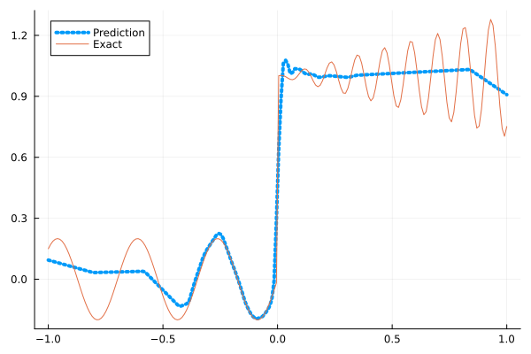
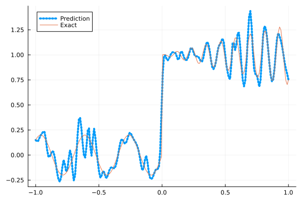
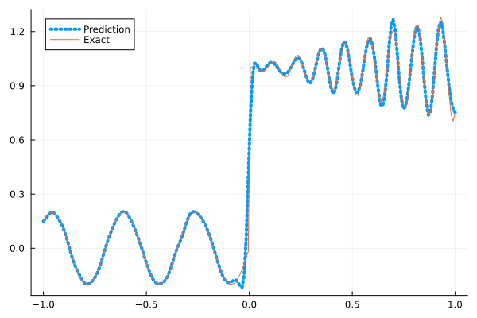
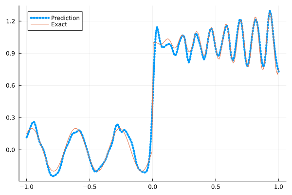
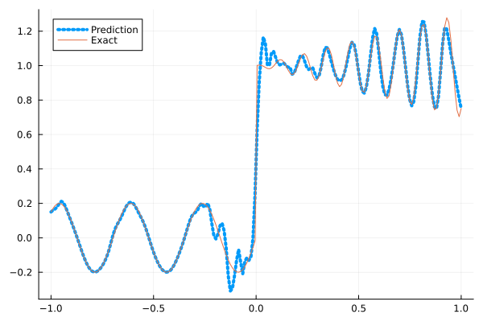

Fitting a nonlinear discontinuous function
This example is taken from here. However, we do not use adaptive activation functions. Instead, we show that using suitable non-parametric activation functions immediately performs better.
Consider the following discontinuous function with discontinuity at $x=0$:
\[u(x)= \begin{cases}0.2 \sin (18 x) & \text { if } x \leq 0 \\ 1+0.3 x \cos (54 x) & \text { otherwise }\end{cases}\]
The domain is $[-1,1]$. The number of training points used is 50.
Import packages
using Lux, Sophon
using NNlib, Optimisers, Plots, Random, StatsBase, ZygoteDataset
function u(x)
if x <= 0
return 0.2 * sin(18 * x)
else
return 1 + 0.3 * x * cos(54 * x)
end
end
function generate_data(n=50)
x = reshape(collect(range(-1.0f0, 1.0f0, n)), (1, n))
y = u.(x)
return (x, y)
endgenerate_data (generic function with 2 methods)Let's visualize the data.
x_train, y_train = generate_data(50)
x_test, y_test = generate_data(200)
Plots.plot(vec(x_test), vec(y_test),label=false)
Naive Neural Networks
First, we demonstrate that naive, fully connected neural nets are not sufficient for fitting this function.
model = FullyConnected((1,50,50,50,50,1), relu)Chain(
layer_1 = Dense(1 => 50, relu), # 100 parameters
layer_2 = Dense(50 => 50, relu), # 2_550 parameters
layer_3 = Dense(50 => 50, relu), # 2_550 parameters
layer_4 = Dense(50 => 50, relu), # 2_550 parameters
layer_5 = Dense(50 => 1), # 51 parameters
) # Total: 7_801 parameters,
# plus 0 states.Train the model
function train(model, x, y)
ps, st = Lux.setup(Random.default_rng(), model)
opt = Adam()
st_opt = Optimisers.setup(opt,ps)
function loss(model, ps, st, x, y)
y_pred, _ = model(x, ps, st)
mes = mean(abs2, y_pred .- y)
return mes
end
for i in 1:2000
gs = gradient(p->loss(model,p,st,x,y), ps)[1]
st_opt, ps = Optimisers.update(st_opt, ps, gs)
if i % 100 == 1 || i == 2000
println("Epoch $i || ", loss(model,ps,st,x,y))
end
end
return ps, st
endtrain (generic function with 1 method)Plot the result
@time ps, st = train(model, x_train, y_train)
y_pred = model(x_test,ps,st)[1]
Plots.plot(vec(x_test), vec(y_pred),label="Prediction",line = (:dot, 4))
Plots.plot!(vec(x_test), vec(y_test),label="Exact",legend=:topleft)Epoch 1 || 0.20749930571054748
Epoch 101 || 0.017150863124510137
Epoch 201 || 0.016122028882603775
Epoch 301 || 0.015662618644826896
Epoch 401 || 0.015488181093854525
Epoch 501 || 0.015169411229851685
Epoch 601 || 0.013560221419584741
Epoch 701 || 0.013086277270328645
Epoch 801 || 0.013040843602454878
Epoch 901 || 0.012983985150520174
Epoch 1001 || 0.012963862054070763
Epoch 1101 || 0.012928309502823577
Epoch 1201 || 0.012969680603759515
Epoch 1301 || 0.012848902377789467
Epoch 1401 || 0.01291235080456763
Epoch 1501 || 0.01276680075692851
Epoch 1601 || 0.012772589564088612
Epoch 1701 || 0.012572832394941722
Epoch 1801 || 0.01238098144052776
Epoch 1901 || 0.012238059525570156
Epoch 2000 || 0.011661924938033466
6.273702 seconds (10.44 M allocations: 1.277 GiB, 3.94% gc time, 91.52% compilation time)
Siren
We use four hidden layers with 50 neurons in each.
model = Siren(1,50,50,50,50,1; omega = 30f0)Chain(
layer_1 = Dense(1 => 50, sin), # 100 parameters
layer_2 = Dense(50 => 50, sin), # 2_550 parameters
layer_3 = Dense(50 => 50, sin), # 2_550 parameters
layer_4 = Dense(50 => 50, sin), # 2_550 parameters
layer_5 = Dense(50 => 1), # 51 parameters
) # Total: 7_801 parameters,
# plus 0 states.@time ps, st = train(model, x_train, y_train)
y_pred = model(x_test,ps,st)[1]
Plots.plot(vec(x_test), vec(y_pred),label="Prediction",line = (:dot, 4))
Plots.plot!(vec(x_test), vec(y_test),label="Exact",legend=:topleft)Epoch 1 || 0.7248433021476223
Epoch 101 || 0.000801020132644385
Epoch 201 || 7.74962785783839e-5
Epoch 301 || 1.0186439420159577e-5
Epoch 401 || 1.242389592380315e-6
Epoch 501 || 1.1967616796163943e-7
Epoch 601 || 8.479352514410796e-9
Epoch 701 || 4.257087412920945e-10
Epoch 801 || 1.7073166375355648e-11
Epoch 901 || 1.4295535112694094e-12
Epoch 1001 || 2.1013879438129457e-13
Epoch 1101 || 1.015749295064084e-13
Epoch 1201 || 6.036694086108277e-14
Epoch 1301 || 5.60496728324094e-14
Epoch 1401 || 5.125262944423976e-14
Epoch 1501 || 3.2044161460500416e-14
Epoch 1601 || 3.0264172803611464e-14
Epoch 1701 || 3.2230720842541793e-14
Epoch 1801 || 5.1524428681600613e-14
Epoch 1901 || 5.428197324015461e-14
Epoch 2000 || 8.50481002171534e-14
3.222468 seconds (6.74 M allocations: 1.179 GiB, 4.11% gc time, 82.42% compilation time)
As we can see the model overfits the data, and the high frequencies cannot be optimized away. We need to tunning the hyperparameter omega
model = Siren(1,50,50,50,50,1; omega = 10f0)Chain(
layer_1 = Dense(1 => 50, sin), # 100 parameters
layer_2 = Dense(50 => 50, sin), # 2_550 parameters
layer_3 = Dense(50 => 50, sin), # 2_550 parameters
layer_4 = Dense(50 => 50, sin), # 2_550 parameters
layer_5 = Dense(50 => 1), # 51 parameters
) # Total: 7_801 parameters,
# plus 0 states.@time ps, st = train(model, x_train, y_train)
y_pred = model(x_test,ps,st)[1]
Plots.plot(vec(x_test), vec(y_pred),label="Prediction",line = (:dot, 4))
Plots.plot!(vec(x_test), vec(y_test),label="Exact",legend=:topleft)Epoch 1 || 1.4401986562552451
Epoch 101 || 0.006637324664697703
Epoch 201 || 0.004770029318466128
Epoch 301 || 0.0036618017065719486
Epoch 401 || 0.0026563448308919964
Epoch 501 || 0.0017819187484349654
Epoch 601 || 0.0011489856761048428
Epoch 701 || 0.0007673722717375168
Epoch 801 || 0.0005146546902546281
Epoch 901 || 0.0003304918082958639
Epoch 1001 || 0.00020466315870354328
Epoch 1101 || 0.00012725273803515267
Epoch 1201 || 8.300301709797473e-5
Epoch 1301 || 5.8710892172294984e-5
Epoch 1401 || 4.549501324753411e-5
Epoch 1501 || 3.7952871789517656e-5
Epoch 1601 || 3.317146596669385e-5
Epoch 1701 || 2.9771452644557246e-5
Epoch 1801 || 2.7147415700078963e-5
Epoch 1901 || 2.501841482136867e-5
Epoch 2000 || 2.3244158882323337e-5
0.575387 seconds (1.14 M allocations: 891.066 MiB, 6.65% gc time)
Gaussian activation function
We can also try using a fully connected net with the gaussian activation function.
model = FullyConnected((1,50,50,50,50,1), gaussian)Chain(
layer_1 = Dense(1 => 50, gaussian), # 100 parameters
layer_2 = Dense(50 => 50, gaussian), # 2_550 parameters
layer_3 = Dense(50 => 50, gaussian), # 2_550 parameters
layer_4 = Dense(50 => 50, gaussian), # 2_550 parameters
layer_5 = Dense(50 => 1), # 51 parameters
) # Total: 7_801 parameters,
# plus 0 states.@time ps, st = train(model, x_train, y_train)
y_pred = model(x_test,ps,st)[1]
Plots.plot(vec(x_test), vec(y_pred),label="Prediction",line = (:dot, 4))
Plots.plot!(vec(x_test), vec(y_test),label="Exact",legend=:topleft)Epoch 1 || 0.40413082131297867
Epoch 101 || 0.00521715556949258
Epoch 201 || 0.004118657940676726
Epoch 301 || 0.0034219550546488986
Epoch 401 || 0.0013972498015078546
Epoch 501 || 6.252323669133745e-5
Epoch 601 || 5.1694664277938276e-5
Epoch 701 || 1.0466601312941992e-7
Epoch 801 || 1.707329429480776e-9
Epoch 901 || 2.1156957573950754e-11
Epoch 1001 || 0.0003609636665927258
Epoch 1101 || 7.546545113690744e-9
Epoch 1201 || 9.233747349155208e-12
Epoch 1301 || 4.1890608909779857e-7
Epoch 1401 || 2.9019149658860526e-8
Epoch 1501 || 1.8293154898844198e-5
Epoch 1601 || 3.261004697779925e-9
Epoch 1701 || 3.929112887335255e-13
Epoch 1801 || 3.1532290046696206e-13
Epoch 1901 || 6.062950085522153e-13
Epoch 2000 || 0.0009558329768690035
3.076263 seconds (5.87 M allocations: 1.133 GiB, 3.35% gc time, 78.69% compilation time)
Quadratic activation function
quadratic is much cheaper to compute compared to the Gaussian activation function.
model = FullyConnected((1,50,50,50,50,1), quadratic)Chain(
layer_1 = Dense(1 => 50, quadratic), # 100 parameters
layer_2 = Dense(50 => 50, quadratic), # 2_550 parameters
layer_3 = Dense(50 => 50, quadratic), # 2_550 parameters
layer_4 = Dense(50 => 50, quadratic), # 2_550 parameters
layer_5 = Dense(50 => 1), # 51 parameters
) # Total: 7_801 parameters,
# plus 0 states.@time ps, st = train(model, x_train, y_train)
y_pred = model(x_test,ps,st)[1]
Plots.plot(vec(x_test), vec(y_pred),label="Prediction",line = (:dot, 4))
Plots.plot!(vec(x_test), vec(y_test),label="Exact",legend=:topleft)Epoch 1 || 0.2752268268319929
Epoch 101 || 0.00645527554212838
Epoch 201 || 0.00579223358107659
Epoch 301 || 0.005127036627817225
Epoch 401 || 0.0041797229799327125
Epoch 501 || 0.002809103133480178
Epoch 601 || 0.0012655460500046647
Epoch 701 || 0.0003551074964812341
Epoch 801 || 5.617953032377108e-5
Epoch 901 || 5.75532019857195e-6
Epoch 1001 || 6.446310101691041e-6
Epoch 1101 || 9.624057327352957e-7
Epoch 1201 || 5.067061641686503e-9
Epoch 1301 || 2.4725959080806124e-6
Epoch 1401 || 1.2437477997974095e-9
Epoch 1501 || 1.3215059704096813e-6
Epoch 1601 || 5.469074791234241e-8
Epoch 1701 || 6.179671567000074e-8
Epoch 1801 || 0.00010698531893250785
Epoch 1901 || 1.4218098822059452e-6
Epoch 2000 || 3.5120837190353355e-8
2.804510 seconds (5.59 M allocations: 1.115 GiB, 3.45% gc time, 80.53% compilation time)
Conclusion
"Neural networks suppress high-frequency components" is a misinterpretation of the spectral bias. The accurate way of putting it is that the lower frequencies in the error are optimized first in the optimization process. This can be seen in Siren's example of overfitting data, where you do not have implicit regularization. The high frequency in the network will never go away because it has fitted the data perfectly.
Mainstream attributes the phenomenon that neural networks "suppress" high frequencies to gradient descent. This is not the whole picture. Initialization also plays an important role. Siren mitigates this problem by initializing larger weights in the first layer. In contrast, activation functions such as Gaussian have sufficiently large gradients and sufficiently large support of the second derivative with proper hyperparameters. Please refer to [1], [2] and [3] if you want to dive deeper into this.